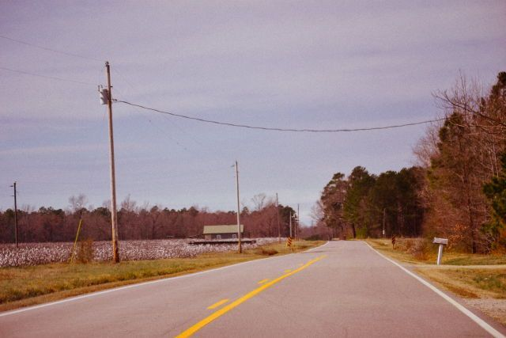

On the Road...
A famous history thar inspired the route 66
A short novel
Come to me the thirsty for solitude!

Pale Gallery
The first vistiges!
"Pray for our sinners"
A famous history thar inspired the route 66
Come to me the thirsty for solitude!
The first vistiges!
What is an experimental film? This elusive and niche genre can be difficult to define, and there are many common misconceptions about experimental filmmaking, but we’ll be sorting through the fact and the fiction to provide a comprehensive overview of what it means for a film to be “experimental”. We’ll get started with a definition, then dig deeper into experimental filmmaking as a genre, and finally close things out by taking a look at some notable examples.
There are many misconceptions about what experimental filmmaking is, so let’s dispel a couple. One common belief is that experimental films have no story. While some experimental films certainly lack anything that could be considered a traditional narrative, that does not hold true for all experimental films.
Biographys
Let’s dig a little deeper into what it means for a project to be classified as an experimental film. There is a modicum of debate over what exactly constitutes an experimental film, and some projects blur the line between traditional cinema and experimental filmmaking by including elements of each.
Let’s dig a little deeper into what it means for a project to be classified as an experimental film.
There is a modicum of debate over what exactly constitutes an experimental film, and some projects blur the line between traditional cinema and experimental filmmaking by including elements of each. Experimentation can be found in the editing, in the filming, in the subject matter, or in the manipulation of the camera and celluloid’s chemical and mechanical processes.